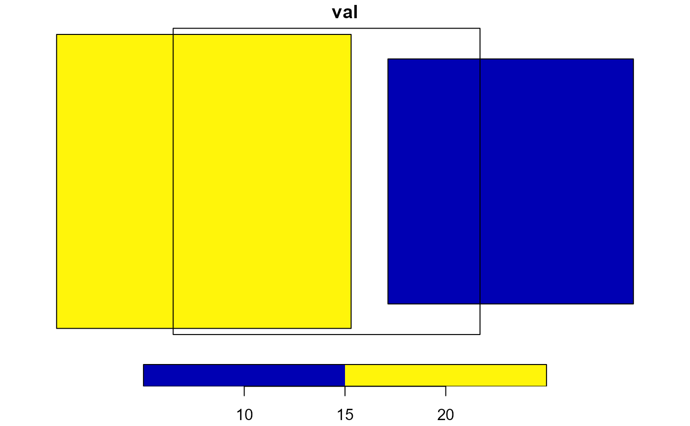

R/calculate_area_intersection_weights.R
calculate_area_intersection_weights.RdReturns the fractional percent of each feature in x that is covered by each intersecting feature in y. These can be used as the weights in an area-weighted mean overlay analysis where x is the data **source** and area- weighted means are being generated for the **target**, y.
This function is a lightwieght wrapper around the functions aw_intersect aw_total and aw_weight from the areal package.
calculate_area_intersection_weights(x, y, normalize, allow_lonlat = FALSE)sf data.frame source features including one geometry column and one identifier column
sf data.frame target features including one geometry column and one identifier column
logical return normalized weights or not.
Normalized weights express the fraction of **target** polygons covered by a portion of each **source** polygon. They are normalized in that the area of each **source** polygon has already been factored into the weight.
Un-normalized weights express the fraction of **source** polygons covered by a portion of each **target** polygon. This is a more general form that requires knowledge of the area of each **source** polygon to derive area-weighted statistics from **source** to **target.
See details and examples for more regarding this distinction.
boolean If FALSE (the default) lon/lat target features are not allowed. Intersections in lon/lat are generally not valid and problematic at the international date line.
data.frame containing fraction of each feature in x that is covered by each feature in y.
Two versions of weights are available:
`normalize = FALSE`, if a polygon from x (source) is entirely within a polygon in y (target), w will be 1. If a polygon from x (source) is 50 and 50 in each. Weights will sum to 1 per **SOURCE** polygon if the target polygons fully cover that feature.
For `normalize = FALSE` the area weighted mean calculation must include the area of each x (source) polygon as in:
> *in this case, `area` is the area of source polygons and you would do this operation grouped by target polygon id.*
> `sum( (val * w * area), na.rm = TRUE ) / sum(w * area)`
If `normalize = TRUE`, weights are divided by the target polygon area such that weights sum to 1 per TARGET polygon if the target polygon is fully covered by source polygons.
For `normalize = FALSE` the area weighted mean calculation no area is required as in:
> `sum( (val * w), na.rm = TRUE ) / sum(w)`
See examples for illustration of these two modes.
library(sf)
#> Linking to GEOS 3.12.1, GDAL 3.8.4, PROJ 9.3.1; sf_use_s2() is TRUE
source <- st_sf(source_id = c(1, 2),
val = c(10, 20),
geom = st_as_sfc(c(
"POLYGON ((0.2 1.2, 1.8 1.2, 1.8 2.8, 0.2 2.8, 0.2 1.2))",
"POLYGON ((-1.96 1.04, -0.04 1.04, -0.04 2.96, -1.96 2.96, -1.96 1.04))")))
source$area <- as.numeric(st_area(source))
target <- st_sf(target_id = "a",
geom = st_as_sfc("POLYGON ((-1.2 1, 0.8 1, 0.8 3, -1.2 3, -1.2 1))"))
plot(source['val'], reset = FALSE)
plot(st_geometry(target), add = TRUE)

(w <-
calculate_area_intersection_weights(source[c("source_id", "geom")],
target[c("target_id", "geom")],
normalize = FALSE, allow_lonlat = TRUE))
#> # A tibble: 2 × 3
#> source_id target_id w
#> <dbl> <chr> <dbl>
#> 1 1 a 0.375
#> 2 2 a 0.604
(res <-
merge(st_drop_geometry(source), w, by = "source_id"))
#> source_id val area target_id w
#> 1 1 10 2.5600 a 0.3750000
#> 2 2 20 3.6864 a 0.6041667
sum(res$val * res$w * res$area) / sum(res$w * res$area)
#> [1] 16.98795
(w <-
calculate_area_intersection_weights(source[c("source_id", "geom")],
target[c("target_id", "geom")],
normalize = TRUE, allow_lonlat = TRUE))
#> # A tibble: 2 × 3
#> source_id target_id w
#> <dbl> <chr> <dbl>
#> 1 1 a 0.24
#> 2 2 a 0.557
(res <-
merge(st_drop_geometry(source), w, by = "source_id"))
#> source_id val area target_id w
#> 1 1 10 2.5600 a 0.2400
#> 2 2 20 3.6864 a 0.5568
sum(res$val * res$w) / sum(res$w)
#> [1] 16.98795